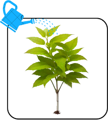
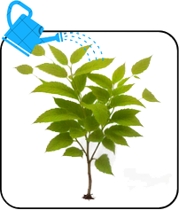

The Secret to Remembering Vocabulary (and Never Forgetting It!)

How to memorize vocabulary and not forget it? "I've studied this, but why do I keep forgetting?" Sounds familiar? You probably haven't used this technique yet!
My Achievement with This Technique:

With this technique, I've managed to memorize over 20,000 words in different foreign languages! Yes, that's right! All the words in my language learning journey are quantified using an app for accountability. And it has reached 20,000! I managed to memorize them all!
After you read this, I promise you'll learn new vocabulary and grammar rules in a language faster. Let me introduce you to...
Is It Just Hype? The Science Says NO!
And this isn't just a gimmick; it's proven and tested by science! Look at this data:
- A study from the Journal of Experimental Psychology showed that participants using spaced repetition achieved an average recall accuracy of 80%, compared to only 60% for those who crammed.
- Another study in Memory & Cognition found spaced repetition superior to reviewing multiple times in a short period. Participants using spaced repetition achieved an average recall accuracy of 75%.
Reference: Bazinas, E. (n.d.). Voovo AI Spaced repetition - Scan images & text to flashcards. voovostudy.com
So, What Exactly IS Spaced Repetition?
Spaced repetition is a study technique where you review information at specific, increasing intervals. Instead of cramming everything at once (like we all do for exams!), it's more effective to review material gradually over longer periods to prevent forgetting.
This way, what you learn stays in your memory longer and becomes more "mature" than if you just crammed. Yes, we learn quickly when cramming, but we only form "weak" knowledge that doesn't last and tends to be forgotten quickly.
It's like with plants: they need to be watered to keep growing. They'll die if we don't water them regularly.
But wait! I think I'm explaining too quickly. To make it simpler, if you still don't quite get it, let's compare it to planting a tree.
The Mighty Tree Analogy
When you plant a tree, you need to water and care for it daily when it's new. This young tree is called a "sapling."
A "sapling" represents new information – fresh but fragile.
In its earliest stages, a sapling can easily be damaged or wilt if it doesn't receive attention and frequent watering. Similarly, if you study something but don't review it, you'll quickly forget what you learned, just like a sapling that isn't watered often.
A neglected sapling, like unreviewed information, withers away.
On the other hand, if you care for the sapling and give it enough time and attention daily, it will gradually grow, and its roots will deepen and become strong. Thus, no matter what storm passes, it will not easily fall.
Consistent "watering" (review) helps knowledge grow strong.
Even if you can no longer care for it as you once did, the tree will remain strong because of the foundations established when it was just a sapling. Its roots have formed a robust connection with the earth, enabling it to withstand the tests of time. In the same way, knowledge accumulated through spaced repetition will stay in your mind, even if you no longer continually review it.
Mature knowledge, like a grown tree, stands strong even without constant attention.
That's the power of spaced repetition. If you use this technique, the new vocabulary and grammar rules you learn will not only become stable in your mind but also deepen your understanding. Through regular review and repetition at the right intervals, your knowledge gradually grows and becomes more robust. As you continue to care for the "sapling" of knowledge, it will become a "tree" that can stand on its own and not easily fall to the challenges of forgetting.
Why Cramming Fails You (But Spaced Repetition Won't)
But how can I be so sure? The answer is simple. Ever crammed for an exam? Do you still remember your high school exam answers? Probably not. Know why? Because you didn't use spaced repetition. The knowledge you formed was merely a "sapling," not yet strong enough for long-term retention.
The Stages of Knowledge: From Sapling to Mighty Oak
In short, the types of knowledge can be visualized as:
New (Bago)
Like a freshly planted sapling. Full of potential but needs lots of care (review). Easily forgotten if neglected – considered "Weak" knowledge.
Young (Bata)
The sapling is growing, roots deepening. Knowledge is becoming more stable, and its foundation is strengthening. Ideas solidify.
Mature (Sagana)
A strong, sturdy tree. Knowledge is part of you, firmly rooted. It can withstand storms (time, lack of review) without toppling.
Visualizing the Fight Against Forgetting
Here's a classic illustration of how our memory works – the forgetting curve. Notice how "watering our plants" (reviewing) boosts retention and flattens the curve over time.
Interactive Forgetting Curve
Click "Review" to see how spaced repetition impacts memory retention. The blue line shows learning with spaced reviews; the gray line shows learning without reviews.
So, if you want to retain your lessons better, try applying this to your daily routine! Spaced repetition!
How Do You Actually DO Spaced Repetition?
It's commonly used with flashcard apps that have a built-in spaced repetition system (SRS) algorithm, like the popular Anki or apps like Migaku (which I personally use and has advanced features for language learners).
Here are the general steps once you've chosen your tool:
- Learn New Info: Encounter a new word, phrase, or grammar rule. Create a digital flashcard for it.
- Initial Review: Review the information soon after, typically within a day. This helps solidify it.
- Spaced Intervals:
- If you recall the information correctly, the app automatically lengthens the interval before your next review (e.g., from 1 day to 3 days, then a week, then a month, and so on).
- If you forget the information, you'll return to a shorter interval. You'll review it more frequently until it sticks.
- Lengthening Strength: Each time you successfully recall an item, the interval for that item typically gets longer. The "tree of knowledge" for that item is getting stronger roots!
Back to Our Trees: Intervals Explained
Think of it this way:
- A newly planted sapling (new information) needs daily monitoring and watering.
 - A young, more established tree (information reviewed a few times) only needs occasional revisits.
 - A fully grown, mature tree (well-learned information) can stand on its own, even if not revisited for a long time.
"But Isn't Making Flashcards a Hassle?"
It can be, if done manually for everything! That's why I recommend using a good flashcard app. Many, like Migaku, are designed to make creating flashcards very easy, especially for language learning from content you're already consuming (like videos or articles).
Key benefits of such apps often include:
- Automatic Spaced Repetition: The app handles the scheduling, so you don't have to worry about when to review what.
- Quick Card Creation: Tools to quickly capture words or phrases, often with automatic lookup for definitions, example sentences, and audio.
- Multimedia Support: Add images, audio, and even video clips to your cards for richer context.
While I use Migaku, the core principle of spaced repetition can be applied with various tools. The key is finding one that fits your workflow and helps you stay consistent.
Ready to Transform Your Learning?
Spaced repetition isn't magic, but it's the closest thing to a scientifically-backed "hack" for long-term memory. Give it a try, be consistent, and watch your vocabulary (and other knowledge) grow like a mighty forest!
Want to see more about how I use these techniques, including Migaku, in action? Check out my videos!
Watch My Learning Methods on YouTube